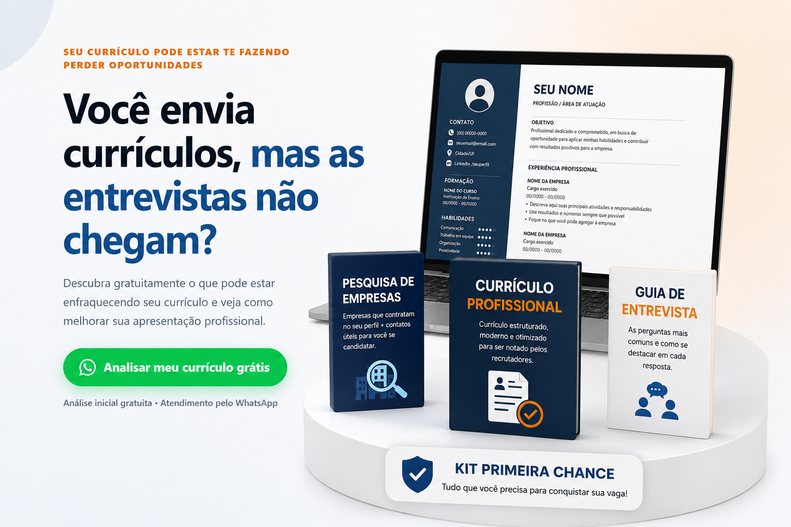
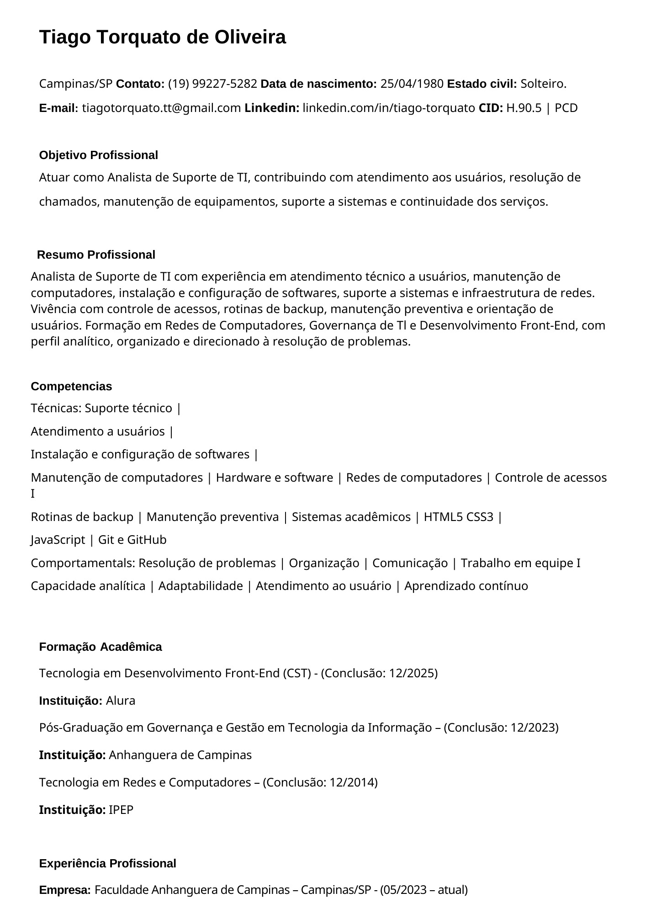
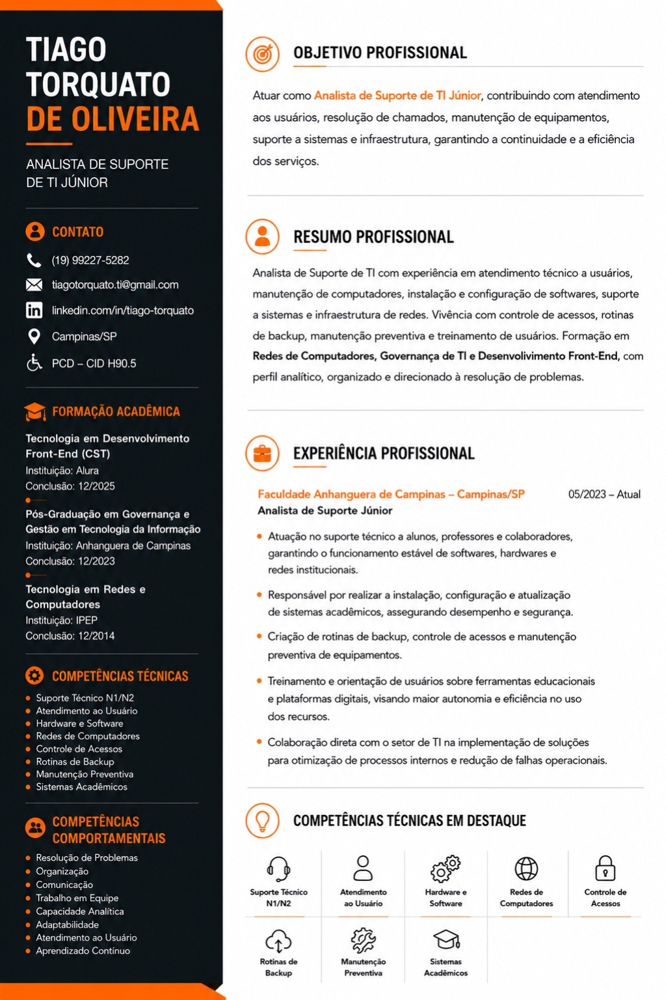
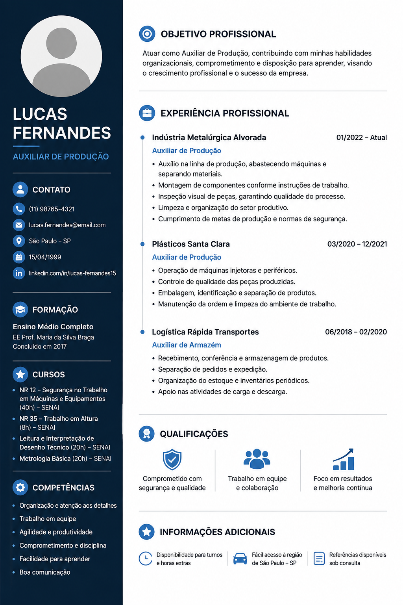

Currículo genérico
O mesmo currículo é enviado para vagas completamente diferentes, sem destacar o que realmente importa para cada oportunidade.
Descubra gratuitamente o que pode estar enfraquecendo seu currículo e veja como melhorar sua apresentação profissional.
Analisar meu currículo grátisAnálise inicial gratuita • Atendimento pelo WhatsApp

Pequenos erros podem fazer uma boa experiência profissional passar despercebida. E, para quem busca o primeiro emprego, mostrar seu potencial da forma certa faz ainda mais diferença.
O mesmo currículo é enviado para vagas completamente diferentes, sem destacar o que realmente importa para cada oportunidade.
Experiências, cursos e habilidades importantes podem acabar escondidos em um documento difícil de ler.
O recrutador pode não entender rapidamente qual oportunidade você procura e onde seu perfil se encaixa.
Mesmo sem muita experiência, cursos, conhecimentos e habilidades podem ser apresentados de maneira muito mais estratégica.
E talvez você nem saiba se o seu currículo tem algum desses problemas.
Quero descobrir gratuitamenteAs informações continuam sendo verdadeiras. O que muda é a forma de organizar, destacar e apresentar seu perfil profissional.


Veja uma avaliação de quem já confiou na Primeira Chance para melhorar sua apresentação profissional.

Atendimento real • Currículos personalizados • Informações preservadas
Você recebe um conjunto de materiais pensado para melhorar sua apresentação e ajudar nos próximos passos da busca por uma oportunidade.
Reorganizamos suas informações e criamos um currículo claro, profissional e direcionado ao seu objetivo.
Selecionamos empresas, sites e canais que podem ajudar você a encontrar oportunidades compatíveis com seu perfil.
Material prático para ajudar você a se preparar para perguntas comuns e chegar mais preparado à entrevista.
Identificamos pontos fracos, informações que podem ser melhor apresentadas e oportunidades de melhoria no seu currículo.
Cada currículo é preparado de acordo com as informações e o objetivo profissional do cliente. Não inventamos experiências ou qualificações.

Você pode começar pela análise gratuita ou adquirir diretamente o Kit Primeira Chance completo.
Contratados separadamente: R$ 49,60
Pagamento único • Sem mensalidade
Você não precisa comprar o Kit para receber uma análise inicial do seu currículo.
Envie seu currículo pelo WhatsApp e receba uma análise inicial com possíveis pontos de melhoria.
Para quem já quer seguir diretamente com a preparação completa.
Você envia seu currículo pelo WhatsApp e fazemos uma análise inicial, apontando possíveis problemas e oportunidades de melhoria. Você não precisa comprar nada para receber essa análise.
Sim. Para quem busca o primeiro emprego, podemos organizar e valorizar informações como formação, cursos, habilidades e conhecimentos relevantes, sempre utilizando informações verdadeiras.
Sim. As informações e o objetivo profissional de cada pessoa são analisados individualmente. Não inventamos experiências, cursos ou qualificações.
O Kit Primeira Chance inclui currículo profissional personalizado, análise personalizada, guia de entrevista e pesquisa de empresas e oportunidades.
Após o atendimento e a confirmação das informações, o currículo é preparado e enviado em formato PDF, pronto para ser utilizado.
O checkout da Primeira Chance permite pagamento por Pix e cartão, conforme as opções disponíveis no momento da compra.
Não. Nenhum serviço sério pode garantir uma contratação. Nosso trabalho é melhorar sua apresentação profissional e oferecer materiais que ajudem na busca por oportunidades.
Sim. Depois de receber o currículo, você poderá conferir as informações e solicitar correções ou ajustes necessários.
Comece com uma análise gratuita ou adquira diretamente o Kit Primeira Chance completo.